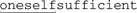

7.6. Fun with Perl EnhancementsMany regular-expression concepts that are now available in other languages were first made available only in Perl. Examples include non-capturing parentheses, lookahead, (and later, lookbehind), free-spacing mode, (most modes, actually and with them comes Still, Perl developers remain innovative, so there are some major concepts available at this time only in Perl. One of the most interesting is the ability to execute arbitrary code during the match attempt. Perl has long featured strong integration of regular expressions into code, but this brings integration to a whole new level. We'll continue with a short overview about this and other innovations available currently only in Perl, followed by the details.
When working with Perl code embedded within a regex (either in a dynamic regex construct or an embedded-code construct), it's best to use only global variables until you understand the important issue related to my variables discussed starting on page 338. 7.6.1. Using a Dynamic Regex to Match Nested PairsA dynamic regex's main use is to allow a regex to match arbitrarily nested constructs (something long thought to be impossible with regular expressions). Its quintessential example is to match content with arbitrarily nested parentheses. To see how a dynamic regex is useful for this, let's first look at why it's not possible with traditional constructs. This simple regex matches a parenthesized run of text:
my $Level0 = qr/ \( ( [^()] )* \) /x; # Parenthesized text
.
.
.
if ($text =~ m/\b( \w+$Level0 )/x) {
print "found function call: $1\n";
}
This would match "substr($str, 0, 3), but not "substr($str, 0, (3+2))" because it has nested parentheses. Let's expand our regex to handle it. That means accommodating one level of nesting. Allowing one level of nesting means allowing parenthesized text within the outer parentheses. So, we need to expand on the subexpression that matches between them, which is currently
my $Level0 = qr/ \( ( [^()] )* \) /x; # Parenthesized text
my $Level1 = qr/ \( ( [^()]| $Level0 )* \) /x; # One level of nesting
The $Level0 here is the same as before; what's new is its use in building $Level1, which matches its own set of parentheses, plus those of $Level0. That's one level of nesting. To match another level, we can use the same approach, creating a $Level2 that uses $Level1 (which still uses $Level0):
my $Level0 = qr/ \( ( [^()] )* \) /x; # Parenthesized text
my $Level1 = qr/ \( ( [^()] | $Level0 )* \) /x; # One level of nesting
my $Level2 = qr/ \( ( [^()] | $Level1 )* \) /x; # Two levels of nesting
We can continue this indefinitely:
my $Level3 = qr/ \( ( [^()] ; $Level2 )* \) /x; # Three levels of nesting
my $Level4 = qr/ \( ( [^()] ; $Level3 )* \) /x; # Four levels of nesting
my $Level5 = qr/ \( ( [^()] ; $Level4 )* \) /x; # Five levels of nesting
Figure 7-1 shows the first few levels graphically. Figure 7-1. Matching a few levels of parenthesesIt's interesting to see the result of all those levels. Here's what $Level3 boils down to:
\(([^()]|\(([^()]|\(([^()]|\(([^()])*\))*\))*\))*\)
Wow, that's ugly. Luckily, we don't have to interpret it directly (that's the regex engine's job). The approach with the Level variables is easy enough to work with, but its drawback is that nesting is limited to however many $Level variables we build. This approach doesn't allow us to match to an arbitrary level. (Murphy's Law being what it is, if we happen to pick X levels to support, we'll run into data with X+1 levels of nesting.) Luckily, we can use a dynamic regex to handle nesting to an arbitrary level. To get there, realize that each of the $Level variables beyond the first is constructed identically: when it needs to match an additional level of nesting, it includes the $Level variable below it. But if the $Level variables are all the same, it could just as well include the $Level above it. In fact, if they're all the same, it could just include itself. If it could somehow include itself when it wanted to match another level of nesting, it would recursively handle any level of nesting. And that's just what we can do with a dynamic regex. If we create a regex object comparable to one of the $Level variables, we can refer to it from within a dynamic regex. (A dynamic-regex construct can contain arbitrary Perl code, so long as its results can be interpreted as a regular expression; Perl code that merely returns a pre-existing regex object certainly fits the bill.) If we put our $Level-like regex object into $LevelN,
we can refer to it with
my $LevelN; # This must be predeclared because it's used in its own definition.
$LevelN = qr/ \(( [^()] | (??{ $LevelN }) )* \) /x;
This matches arbitrarily nested parenthesized text, and can be used just like $Level0 was used earlier:
if ($text =~ m/\b( \w+$LevelN )/x) {
print "found function call: $1\n";
}
Phew! It's not necessarily easy to wrap one's brain around this, but once it "clicks," it's a valuable tool. Now that we have the basic approach worked out, I'd like to make a few tweaks for efficiency's sake. I'll replace the capturing parentheses with atomic grouping
(there's no need to capture, nor to backtrack), and once that's done, I can change Finally, I'd like to move the
$LevelN = qr/ (?> [^()]+ | \( (??{ $LevelN }) \) )* /x;
Since this no longer has outer As a side effect of that, we have the flexibility to apply it where there may be sets of parentheses, not just where there are sets of parentheses:
if ($text =~ m/\b( \w+ \( $LevelN \) )/x) {
print "found function call: $1\n";
}
-----------------------------------
if (not $text =~ m/^ $LevelN $/x) {
print "mismatched parentheses!\n";
}
You can see another example of $LevelN in action on page 343. 7.6.2. Using the Embedded-Code ConstructThe embedded-code construct is particularly useful for regex debugging, and for accumulating information about a match while it's happening. The next few pages walk through a series of examples that eventually lead to a method for mimicking POSIX match semantics. The journey there is perhaps more interesting than the actual destination (unless you need POSIX match semantics, of course) because of the useful techniques and insight we gain along the way. We'll start with some simple regex debugging techniques. 7.6.2.1. Using embedded code to display match-time informationThis code:
"abcdefgh" =~ m{
(?{ print "starting match at [$'|$']\n" })
(?:d|e|f)
}x;
produces:
starting match at [|abcdefgh]
starting match at [a|bcdefgh]
starting match at [ab|cdefgh]
starting match at [abc|defgh]
The embedded-code construct is the first thing in the regex, and so executes
print "starting match at [$'|$']\n"
whenever the regex starts a new match attempt. The displayed string uses the $' and $' variables (☞ 300)[
In fact, if we were to add
(?{ print "matched at [$'<$&>$']\n" })
just before the end of the regex, it would show the match:
matched at [abc<d>efgh]
Now, compare the first example with the following, which is identical except that the "main" regex is now
"abcdefgh" =~ m{
(?{ print "starting match at [$'|$']\n" })
[def]
}x;
In theory, the results should be identical, yet this produces only:
starting match at [abc|defgh]
Why the difference? Perl is smart enough to apply the initial class discrimination
optimization (☞ 247) to the regex with 7.6.2.2. Using embedded code to see all matchesPerl has a Traditional NFA engine, so it stops the moment a match is found, even though there may be additional possible matches. With the clever use of embedded code, we can trick Perl into showing us all possible matches. To see how, let's revisit the silly 'oneself' example from page 177:
"oneselfsufficient" =~ m{
one(self)?(selfsufficient)?
(?{ print "matched at [$'<$&>$']\n" })
}x;
As might be expected, this displays
matched at [<oneself>sufficient]
indicating that '' had been matched at that point in the regex. It's important to realize that despite the "matched" in the message, the print is not actually showing "the match," but rather the match to that point. The distinction is academic with this example because the embedded-code construct is the last thing in the regex. We know that the regex does indeed finish the moment the embedded-code construct has finished, reporting that same result as the actual match. What if we added
matched at [<oneself>sufficient]
matched at [<oneselfsufficient>]
matched at [<one>selfsufficient]
What we've done ensures that the overall match attempt actually fails, but in doing so we've got the regex engine to report all the possible matches. Without the With that in mind, what do you think the following prints?
"123" =~ m{
\d+
(?{ print "matched at [$'<$&>$']\n" })
(?!)
}x;
It displays:
matched at [<123>]
matched at [<12>3]
matched at [<1>23]
matched at [1<23>]
matched at [1<2>3]
matched at [12<3>]
Hopefully at least the first three were expected, but the rest might be unexpected if you're not on your toes. The (?!) forces backtracking and the eventual appearance of the 2nd and 3rd lines. When the attempt at the start of the line fails, the transmission reapplies the regex again starting just before the 2nd character. (Chapter 4 explains this in great detail.) The 4th and 5th lines shown are from that second attempt, and the last line shown is from the third attempt. So, adding the (?!) really does cause it to show all possible matches, not just all of them from a particular starting point. It may be useful to see only the possible matches from a particular starting point; we'll look into that in a bit. 7.6.2.3. Finding the longest matchNow, instead of showing all the matches, let's find and save the longest match. We can do this by using a variable to keep track of the longest match seen so far and comparing each new "almost match" against it. Here is the solution with the 'oneself' example:
$longest_match = undef; # We'll keep track of the longest match here
"oneselfsufficient" =~ m{
one(self)?(selfsufficient)?
(?{
# Check to see if the current match ($&) is the longest so far
if (not defined($longest_match)
or
length($&) > length($longest_match))
{
$longest_match = $&;
}
})
(?!) # Force failure so we'll backtrack to find further "matches"
}x;
# Now report the accumulated result, if any
if (defined($longest_match)) {
print "longest match=[$longest_match]\n";
} else {
print "no match\n";
}
Not surprisingly, this shows 'longest match=[oneselfsufficient]'. That bit of embedded code is pretty long, and something we'll likely use in the future, so let's encapsulate it and the
my $RecordPossibleMatch = qr{
(?{
# Check to see if the current match ($&) is the longest so far
if (not defined($longest_match)
or
length($&) > length($longest_match))
{
$longest_match = $&;
}
})
(?!) # Force failure so we'll backtrack to find further "matches"
}x;
Here's a simple example that finds '9938', the longest match overall:
$longest_match = undef; # We'll keep track of the longest match here
"800-998-9938" =~ m{ \d+ $RecordPossibleMatch }x;
# Now report the accumulated result, if any
if (defined($longest_match)) {
print "longest match=[$longest_match]\n";
} else {
print "no match\n";
}
7.6.2.4. Finding the longest-leftmost matchNow that we know how to find the longest match overall, let's restrict it to finding the longest-leftmost match. That just happens to be the match that a POSIX NFA would find (☞ 177). To accomplish this, we need to disable the transmission's bump-ahead if we've seen a match so far. That way, once we find the first match, normal backtracking still brings us to any other matches available from the same starting location (allowing us to keep track of the longest match), but the disabled bump-ahead inhibits the finding of matches that start later in the string. Perl
doesn't give us direct hooks into the transmission, so we can't disable the bump-ahead directly, but we can get the same effect by not allowing the regex to proceed past the start if $longest_match is already defined. The test for that is 7.6.2.5. Using embedded code in a conditionalTo have the regex engine respond to the results of our test, we use the test as the if of an The if part is underlined, and the then part is shown in bold. Here it is in action, combined with the $RecordPossibleMatch defined on the facing page:
"800-998-9938" =~ m{ $BailIfAnyMatch \d+ $RecordPossibleMatch }x;
This finds '800', the POSIX "longest of all leftmost matches" match. 7.6.3. Using local in an Embedded-Code ConstructThe use of local within an embedded-code construct takes on special meaning. Understanding it requires a good understanding of dynamic scoping (☞ 295) and of the "crummy analogy" from the Chapter 4's discussion of how a regex-directed NFA engine goes about its work (☞ 158). The following contrived (and, as we'll see, flawed) example helps to illustrate why, without a lot of extraneous clutter. It checks to see if a line is composed of only
my $Count = 0;
$text =~ m{
^ (?> \d+ \b | \w+ | \s+ )*$
}x;
When this is matched against a string like '123•abc•73•9271•xyz', the $Count variable is left with a value of three. However, when applied to '123••abc•73xyz' it's left with a value of two, even though it should be left with a value of just one. The problem is that $Count is updated after matching '73', something that is matched by In case you have any confusion with the use of The easy solution for this contrived example is to put the
our
$Count = 0;
$text =~ m{
^ (?> \d+ (?{ local($Count) = $Count + 1 }) \b | \w+ | \s+ )* $
}x;
The first change to notice is that $Count changed from a my variable to a global one (if you use strict, as I always recommend, you can't use an unqualified global variable unless you "declare" it with Perl's our declarator). The other change is that the increment of $Count has been localized. Here's the key behavior: when a variable is localized within a regex, the original value is replaced (the new value is lost) if the code with the local is "unmatched" because of backtracking. So, even though local($Count) = $Count + 1 is executed after '73' is matched by So, local is required to keep $Count consistent until the end of the regex. If we were to put Here's an example:
my
$Count = undef;
our $TmpCount = 0;
$text =~ m{
^ (?> \d+ (?{ local($TmpCount) = $TmpCount + 1 }) \b | \w+ | \s+ )+ $
(?{ $Count = $TmpCount }) # Save the "ending" $Count to a non-localized
variable
}x;
if (defined $Count) {
print "Count is $Count.\n";
} else {
print "no match\n";
}
This seems like a lot of work for something so simple, but again, this is a contrived example designed just to show the mechanics of localized variables within a regex. We'll see practical use in "Mimicking Named Capture" on page 344. 7.6.4. A Warning About Embedded Code and my VariablesIf you have a my variable declared outside a regex, but refer to it from inside regex embedded code, you must be very careful about a subtle issue with Perl's variable binding that has a very unsubtle impact. Before describing the issue, I'll note up front that if you use only global variables within regex embedded code, you don't have to worry about this issue, and you can safely skip this section. Warning: this section is not light reading. This contrived example illustrates the problem:
sub CheckOptimizer
{
my $text = shift; # The first argument is the text to check.
my $start = undef; # We'll note here where the regex is first applied.
my $match = $text =~ m{
(?{ $start = $-[0] if not defined $start}) # Save the first starting
position
\d # This is the regex being tested
}x;
if (not defined $start) {
print "The whole match was optimized away.\n";
if ($match) {
# This can't possibly happen!
print "Whoa, but it matched! How can this happen!?\n";
}
} elsif ($start == 0) {
print "The match start was not optimized.\n";
} else {
print "The optimizer started the match at character $start.\n"
}
}
This code has three my variables, but only one, $start, is related to this issue (the others are not referenced from within embedded code, so are not at issue). It works by first setting $start to the undefined value, then applying a match in which the leading component is an embedded-code construct that sets $start to the starting location of the attempt, but only if it hasn't already been set. The "starting location of the attempt" is derived from $-[0] (the first element of @- ☞ 302). So, when this function is called with
CheckOptimizer("test 123");
the result is:
The optimizer started the match at character 5.
That's OK, but if we invoke the exact same call again, the second time shows:
The whole match was optimized away.
Whoa, but it matched! How can this happen!?
Even though the text checked by the regex is the same (as is the regex itself, for that matter), the result is different, and seems to be wrong. Why? The problem is that the second time through, the $start that the embedded code is updating is the one that existed the first time through, when the regex was compiled. The $start that the rest of the function uses is actually a new variable created afresh when the my is executed at the start of each function call. The key to this issue is that my variables in embedded code are "locked in" (bound, in programming terminology) to the specific instance of the my variable that is active at the time the regex is compiled. (Regex compilation is discussed in detail starting on page 348.) Each time CheckOptimizer is called, a new instance of $start is created, but for esoteric reasons, the $start inside the embedded code still refers to the first instance that is now longone. Thus, the instance of $start that the rest of the function uses doesn't receive the value ostensibly written to it within the regex. This type of instance binding is called a closure, and books like Programming Perl and Object Oriented Perl discuss why it's a valuable feature of the language. There is debate in the Perl community, however, as to just how much of a "feature" it is in this case. To most people, it's very unintuitive. The solution is to not refer to my variables from within a regex unless you know that the regex literal will be compiled at least as often as the my instances are refreshed. For example, the my variable $NestedStuffRegex is used within the SimpleConvert subroutine in the listing on page 345, but we know this is not a problem because there's only ever one instance of $NestedStuffRegex. Its my is not in a function or a loop, so it's created just once when the script is loaded, with that same instance existing until the program ends. 7.6.5. Matching Nested Constructs with Embedded CodeThe example on page 328 shows how to match arbitrarily nested pairs using a dynamic regex. That's generally the easiest way to do it, but it's instructive to see a method using only embedded-code constructs, so I'd like to show it to you here. The approach is simply this: keep a count of how many open parentheses we've seen that have not yet been closed, and allow a closing parenthesis only if there are outstanding opens. We'll use embedded code to keep track of the count as we match through the text, but before looking at that, let's look at a (not yet working) skeleton of the expression:
my $NestedGuts = qr{
(?>
(?:
# Stuff not parenthesis
[^()]+
# An opening parenthesis
| \(
# A closing parenthesis
| \)
)*
)
}x;
The atomic grouping
is required for efficiency, to keep the To incorporate the counting, we need these four steps:
Adding these items to the skeleton expression gives us:
my $NestedGuts = qr{
(?{ local
$OpenParens = 0 }) # ❶ Counts the number of nested opens
waiting to close.
(?> # atomic-grouping for efficiency
(?:
# Stuff not parenthesis
[^()]+
# ❷ An opening parenthesis
| \( (?{ $OpenParens++ })
# ❸ Allow a closing parenthesis, if we're expecting any
| \) (?(?{ $OpenParens != 0 }) (?{ $OpenParens-- }) | (?!) )
)*
)
(?(?{ $OpenParens != 0 })(?!)) # ❹ If there are any open parens left, don't
finish
}x;
This can now be used just like $LevelN on page 330. The local is used as a precaution to isolate this regex's use of $OpenParens from any other use the global variable might have within the program. Unlike local's use in the previous section, it's not needed for backtracking protection because the atomic grouping in the regex ensures that once an alternative has been matched, it can't ever be "unmatched." In this case, the atomic grouping is used for both efficiency and to absolutely ensure that the text matched near one of the embedded-code constructs can't be unmatched by backtracking (which would break the sync between the value of $OpenParens and the number of parentheses actually matched). 7.6.6. Overloading Regex LiteralsYou can pre-process the literal parts of a regex literal in any way you like with overloading. The next sections show examples. 7.6.6.1. Adding start- and end-of-word metacharactersPerl doesn't support First, we'll create a function, say, MungeRegexLiteral, that does the desired preprocessing:
sub MungeRegexLiteral($)
{
my ($RegexLiteral) = @_; # Argument is a string
$RegexLiteral =~ s/\\</(?<!\\w)(?=\\w)/g;# Mimic \< as start-of-word
boundary
$RegexLiteral =~ s/\\>/(?<=\\w)(?!\\w)/g;# Mimic \> as end-of-word
boundary
return $RegexLiteral; # Return possibly-modified string
}
When this function is passed a string like '⋯\<⋯', it converts it and returns the string '⋯(?<!\w)(?=\w)⋯'. Remember, because the replacement part of a substitution is like a double-quoted string, it needs '\\w' to get '\w' into the value. Now, to install this so that it gets called automatically on each literal part of a regex literal, we put it into a file, say MyRegexStuff.pm, with the Perl mechanics for overloading:
package MyRegexStuff; # Best to call the package something unique
use strict; # Good practice to always use this
use warnings; # Good practice to always use this
use overload;
# Allows us to invoke Perl's
overloading mechanism
# Have our regex handler installed when we're use'd ....
sub import { overload::constant qr => \&MungeRegexLiteral }
sub MungeRegexLiteral($)
{
my ($RegexLiteral) = @_; # Argument is a string
$RegexLiteral =~ s/\\</(?<!\\w)(?=\\w)/g; # Mimic \< as start-of-word boundary
$RegexLiteral =~ s/\\>/(?<=\\w)(?!\\w)/g; # Mimic \> as end-of-word boundary
return $RegexLiteral; # Return possibly-modified string
}
1; # Standard idiom so that a 'use' of this file returns something true
If we place MyRegexStuff.pm in the Perl library path (see PERLLIB in the Perl documentation), we can then invoke it from Perl script files in which we want the new features made available. For testing, though, we can just leave it in the same directory as the test script, invoking it with:
use lib '.'; # Look for library files in the current directory
use MyRegexStuff; # We now have our new functionality available!
We must use MyRegexStuff in any file in which we want this added support for regex literals, but the hard work of building MyRegexStuff.pm need be done only once. (The new support isn't available in MyRegexStuff.pm itself because it doesn't use MyRegexStuff something you wouldn't want to do.) 7.6.6.2. Adding support for possessive quantifiersLet's extend MyRegexStuff.pm to add support for possessive quantifiers like The regex part can be a parenthesized expression, a metasequence like
$RegexLiteral =~ s/( \( $LevelN \)[*+?] )\+/(?>$1)/gx;
to the MungeRegexLiteral function. That's it. Now, with it part of our overloaded package, we can use a regex literal with possessive quantifiers, like this example from page 198:
$text =~ s/"(\\.|[^"])*+"//; # Remove double-quoted strings
Extending this beyond just parenthesized expressions is tricky because of the variety of things that can be in a regular expression. Here's one attempt:
$RegexLiteral =~ s{
(
# Match something that can be quantified ...
(?: \\[\\abCdDefnrsStwWX] # \n, \w, etc.
| \\c. # \cA
| \\x[\da-fA-F]{1,2} # \xFF
| \\x\{[\da-fA-F]*\} # \x{1234}
| \\[pP]\{[^{}]+\} # \p{Letter}
| \[\]?[^]]+\] # "poor man's" class
| \\\W # \*
| \( $LevelN \) # (⋯)
| [^()*+?\\] # almost anything else
)
# ...and is quantified...
(?: [*+?] ; \{\d+(?:,\d*)?\} )
)
\+ # ...and has an extra '+' after the quantifier.
}{(?>$1)}gx;
The general form of this regex is the same as before: match something quantified possessively, remove the '+', and wrap the result in These problems can be overcome with great effort, perhaps using a technique that carefully walks through the regex from start to finish (similar to the approach shown in the sidebar on page 132). I'd like to enhance the part that matches a character class, but in the end, I don't feel it's worth it to address the other issues, for two reasons. The first is that the situations in which it doesn't already work well are fairly contrived, so just fixing the character class part is probably enough to make it acceptable in practice. But in the end, Perl's regex overloading currently has a fatal flaw, discussed in the next section, which renders it much less useful than it might otherwise be. 7.6.7. Problems with Regex-Literal OverloadingRegex-literal overloading can be extremely powerful, at least in theory, but unfortunately, it's not very useful in practice. The problem is that it applies to only the literal part of a regex literal, and not the parts that are interpolated. For example, with the code m/($MyStuff)*+/ our MungeRegexLiteral function is called twice, once with the literal part of the regex before the variable interpolation ("("), and once with the part after (")*+"). (It's never even given the contents of $MyStuff.) Since our function requires both parts at the same time, variable interpolation effectively disables it. This is less of an issue with the support for \< and \> we added earlier, since they're not likely to be broken up by variable interpolation. But since overloading doesn't affect the contents of an interpolated variable, a string or regex object containing '\<' or '\>' would not be processed by overloading. Also, as the previous section touched on, when a regex literal is processed by overloading, it's not easy to be complete and accurate every time. Even something as simple as our support for \> gets in the way when given '\\>', ostensibly to match a '\' followed by '>'. Another problem is that there's no way for the overload processing to know about the modifiers that the regex was applied with. In particular, it may be crucial to know whether /x was specified, but there's currently no way to know that. Finally, be warned that using overloading disables the ability to include characters by their Unicode name ( 7.6.8. Mimicking Named CaptureDespite the shortcomings of overloading, I think it's instructive to see a complex example bringing together many special constructs. Perl doesn't offer named capture (☞ 138), but it can be mimicked with capturing parentheses and the $^N variable (☞ 301), which references the text matched by the most-recently-closed set of capturing parentheses. (I put on the hat of a Perl developer and added $^N support to Perl expressly to allow named-capture to be mimicked.) As a simple example, consider:
This uses the $HttpUrl regex object developed on page 303. The underlined part is an embedded-code construct that saves the text matched by $HttpUrl to the variable $url. In this simple situation, it seems overkill to use $^N instead of $1, or to even use the embedded-code construct in the first place, since it seems so easy to just use $1 after the match. But consider encapsulating part of that into a regex object, and then using it multiple times:
my $SaveUrl = qr{
($HttpUrl) # Match an HTTP URL...
(?{ $url = $^N }) # ...and save to $url
}x;
$text =~ m{
http \s*=\s* ($SaveUr)
| src \s*=\s* ($SaveUrl)
}xi;
Regardless of which matches, $url is set to the URL that matched. Again, in this particular use, you could use other means (such as the $+ variable ☞ 301), but as $SaveUrl is used in more complex situations, the other solutions become more difficult to maintain, so saving to a named variable can be much more convenient. One problem with this example is that values written to $url are not "unwritten" when the construct that wrote to them is unmatched via backtracking. So, we need to modify a localized temporary variable during the initial match, writing to the "real" variable only after an overall match has been confirmed, just as we did in the example on page 338. The listing below shows one way to solve this. From the user's point of view, after using I could have chosen a name like %NamedCapture, but instead chose %^N for a few reasons. One is that it's similar to $^N. Another is that it's not required to be predeclared with our when used under use strict. Finally, it's my hope that Perl will eventually add named capture natively, and I think adding it via %^N would be a fine idea. If that happens, %^N would likely be automatically dynamically scoped like the rest of the regex-related special variables (☞ 299). But as of now, it's a normal global variable, so is not dynamically scoped automatically. Again, even this more-involved approach suffers from the same problems as anything using regex-literal overloading, such as an incompatibility with interpolated variables. |
 \A
\A ,
,  ', resulting in an overall match.
', resulting in an overall match.
 ]
]